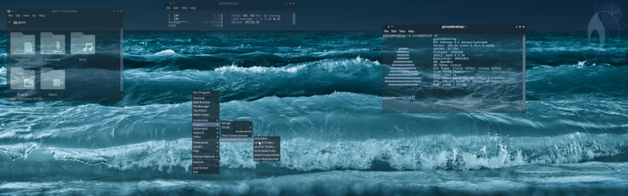
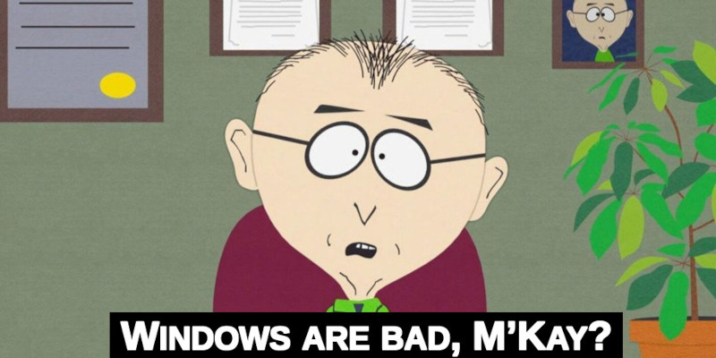

Linux Desktop#
TL;DR#
IMHO Linux Desktop with all its warts (and there are many) is the best platform to run on your PC and laptop with a caveat...
It will NOT (!) be flawless experience out of the box because Linux is a LEGO set - DIY (Do-It-Yourself) system and it is as good as you make it!
The bottom line is:
It can be the "bestest Desktop evah"... for
YOU (and only you specifically).

Make it yours#
I made a Linux course for beginners - I recommend to check out the first part (intro) and the second part (UI).
Linux has many flavours of graphical desktops (each with different set of problems) but anyone can find what suits them the best:
- matured, fancy, bloated but reasonably polished KDE
- conservative and lean XFCE
- hot mess from RedHat GNOME-HELL (some like it...)
- minimalist window managers: Openbox, Fluxbox
- minimalist tiling managers: dwm, awesome
- fancy tiling managers: i3, Hyprland
This was not a complete listing... There are too many.
You can run any of these on any kind of Linux distribution and that is a whole another story...
How many of them are there can be tracked here: distrowatch.com
Running Linux as a desktop and a daily driver is a mixed bag and it requires some fiddling but so does running anything else...
The difference is - Linux is actually and truly customizable.
Windows are bad, M'Kay?#

People do not realize that they were coerced into "Windows" way of things because M$ spent ton of money to push their system via OEM partners on every PC and laptop imaginable.
When regular people are not exposed to any other operating systems then they became indoctrinated and develop wrong expectation on how to use their computers...
Windows user's view of computing is:
- OS is preinstalled and PC = Windows...
- Downloading dubious executables from shoddy websites is normal...
- Getting CD with obsolete drivers and bunch of malware with it is the way...
- Operating system is getting slower and slower until you must reinstall...
- They want you to have M$ account...
- If you need something then hope someone made GUI app for it...
- If something does not work then reboot and reboot again...
- If M$ wants to install broken updates then you cannot do anything about it...
- If M$ wants to reboot your PC then you cannot do anything about it...
- If you want to have smooth fonts then poor you...
- If you want to read PDFs and copy text around then suffer...
- If you want to have control over your hardware and system then forget it...
This article is full of my opinions of course but as someone who is running Linux desktop since 2008 - I think I can provide some insights.
The Year of the Linux Desktop#
The Year of the Linux Desktop is such a meme that it even has a website:
Although it never came so close to actually happening like in 2026.
The reason is the ensh!ttification 💩 of Microslop's Windows 11:
- Yahoo - Microsoft is putting an end to microslop on Windows 11
- Vast Number of Windows Users Refusing to Upgrade After Microsoft’s Embrace of AI Slop
- What is going on with Windows 11?
- The Windows 11 Disaster Microsoft Didn’t See Coming
- Is it time to recall Windows 11?
- YouTubers have plenty of content
It was a double-punch and the second came from Valve:
I never saw so many users trying Linux for the first time.
The Paradox#
As Linux is getting wave of new users the open-source community is throwing wrench into it...
Ubuntu#
I started with Ubuntu (Ubuntu 6.06 LTS (Dapper Drake)) as I mentioned in my profile but I would never recommend any recent release of that distribution to anyone - instead of providing more user-friendly polished version of Debian on which their system is based - they introduced their own tools and way of doing things which I don't find good nor user-friendly.
E.g. amazon ads and privacy violation, sending your data, yet another config tool netplan, snaps vs classic packages - I myself like to use containers to run applications but I don't think their solution is convenient much.
Canonical#
The company behind Ubuntu is replacing battle-tested rock-solid GNU utilities with buggy new implementation and there is just not a reason to do it.
Linux is (was) deemed as super stable system and it does not look good when things like this happen to a newbie running Linux for the first time.
It is enough to deal with weird wifi/bluetooth cards and dual graphic hell on laptops which do not work out of the box and you must scour the internet for forums and helpful posts to fix it...
RedHat#
Some made a point to migrate to RedHat based distros because of this replacement of GNU utils.
Here I can say that you will just step out of the frying pan, into the fire...
Redhat is hiding behind freedesktop.org and they had for years unhealthy influence on Linux ecosystem (they also did many good things: work on the kernel, drivers etc.).
There was a lot of noise with systemd (systemd is the best example of Suck).
RedHat has notorious NIH (Not-Invented-Here) syndrom, e.g. their old beef with Docker:
Podman offers an experience similar to the Docker command line...enabling us to say goodbye to big fat daemons.
And yet from this discussion:
There was also Red Hat's issue with "no big fat daemons." If that's the case, how do they justify their stance on systemd?
No argument there... on one hand they push systemd monstrosity and on the
other fat daemons are bad
...
Dishonest much?
And their feud continues by means of offering basically the same product as Docker Desktop but on their technology: Podman Desktop
RedHat is known for hijacking and then killing projects (CoreOS, CentOS), recent Xlibre controversy.
And on top of all of it they now push the aislop into their offering including Fedora...
I would steer clear of RedHat products.
What distro then?#
I cannot answer that for you - you must do what I did: distro hopping
Try few of them - visit their websites look at their docs, their screenshots, check their forums and get the feel.
Most importantly: install and try
Actually NO... DO!
You can use Virtualbox or unused old laptop.
You can experiment with desktop environments on every of them or maybe pick a distro based on what is their default most polished desktop experience.
Once you find something you like then be serious about it and give it time - make it primary machine for everything including work.
If there is some Windows-only application which you need then Wine might help.
Point is to give it fair try/do and don't try to use it as
Windows... With Linux you have more capable and open platform to play with so
adjust to it...
You will encounter issues and that is almost guaranteed but during the process of solving them you will learn a lot.
If you know why you want to switch to Linux then you will find the rewards worth the journey.
If you just want less sucky Windows then I don't know:
Maybe just grab Windows XP and disconnect from the internet?
¯\_(ツ)_/¯
What about *BSD?#
They are decade(s) behind Linux in many aspects but... maybe... one day... maybe.
Final words#
It feels like a rant but I think it is good to be honest and I am way past of being Linux evangelist (if I ever was one).
If you don't know why you would want to run Linux instead of anything else then I will not try to preach to you - I don't want to be anyone's personal tech support guy.
If you recognize the benefits of running system like Linux then good for you.
The rest can suffer whatever next is coming their way from Microslop.
P.S. I don't consider Apple products as competition and it is a whole another topic and not even worth my time to tackle.